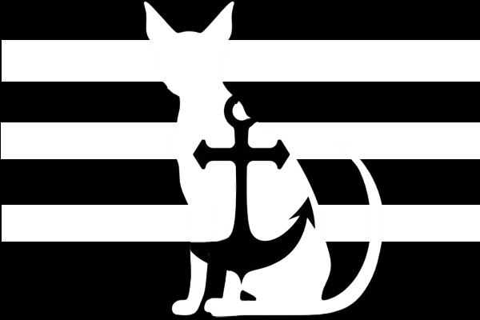

Anchor Haven



Strait
Welcome to Anchor Haven
⋇ ⤜ ≺ ~ ≻ ⤛ ⋇
Many centuries ago, a pirate ship named "Anchor" suffered a terrible shipwreck on the coast of a mysterious archipelago that has never been discovered before. The survivors established a small colony, fishing, hunting and growing crops for sustinance. The crew was never found, and their descendants live on Anchor Haven to this day.
Anchor Haven consists of numerous islands with different terrains and climates. Each one is a habitat to unique animal species, and provides various resources for the abandoned pirate colony to survive.
Many centuries before the Anchor crew ended up on the island, it was known to many sailors and was often used as a secret place for refuge or for hiding treasures. However, those who knew of this location have passed and the knowledge was lost. Their leftover items, however, helped the descendants of the Anchor crew survive and form their own understanding of the big world out there.
The earlier generations have tried to leave the island, but their lack of knowledge and resources made these attempts futile, even dangerous. However, maybe one day, a master of shipbuilding and sailing will be born that will save their people and uncover the mysteries of Anchor Haven to the rest of the world.
For now, however, the people of Anchor Haven feel happy at their home. They are always occupied and at peace, and can not imagine a different life for themselves.